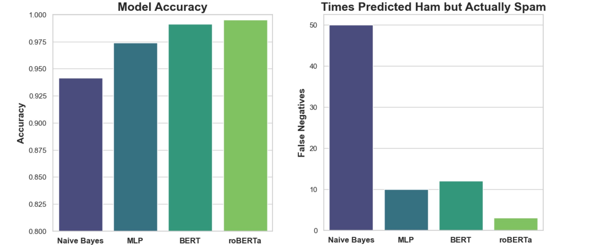

Converting ScamDetective.ai from a website to a GPT:
Improved Generalizability and Robustness of the answers
Educates users about scams through natural conversation
ScamDetective.ai Version 1 (Deprecated)
ScamDetective.ai v1 Story
Originally, ScamDetective.ai was a project for a graduate AI class
Inspired by the project results, we turned the project into a full website
ScamDetective.ai v1 (video above) improved the AI in the project and combined it with empirical, rule-based analysis
In 2024, Version 1 was deprecated and replaced with ScamDetective.ai v2. Version 2 took the learnings and analysis from v1 and applied them to create a GPT in the OpenAI GPTs
The rest of this webpage delves into the project that inspired ScamDetective.ai v1
Introduction
Online scams are getting more prevalent and robust. The days of the Nigerian Prince are out and the new generation of scams have arrived.
“Newly released Federal Trade Commission data shows that consumers reported losing nearly $8.8 billion to fraud in 2022, an increase of more than 30 percent” - FTC
Our proposed solution is ScamDetective.ai, a website that utilizes the power of AI to mitigate the impact of scams
Design
For the original class project that became ScamDetective.ai v1 we designed our experiment as follows:
Collect a vast amount of text data labeled safe or scam
Augment the data with synonyms to increase sample size and robustness
Test different classification models and evaluate best model
Went from 5:1 safe-to-spam ratio to a 5:2 ratio (doubled spam instances)
We tested several small models and found MLP to be the best
To assess benefit from augmentation we reran MLP after augmentation
Data augmentation improved MLP F1 accuracy by roughly 5% (right)
Models for Final Evaluation
Our testing had MLP (Multi Layer Perceptron) and SVM (Support Vector Machine) performing better than Naive Bayes.
However, we believed that we could get better results from Naive Bayes with additional tweaking.
Therefore, in our final evaluation we decided to have Naive Bayes and MLP representing classical models vs BERT and roBERTa representing transformer-based models.
Tested models
Naive Bayes: a probabilistic machine learning classifier based on applying Bayes' theorem with strong (naive) independence assumptions between the features
Multi Layer Perceptron (MLP): a type of neural network consisting of multiple perceptron layers, typically used for complex pattern recognition and classification
While there are many ways to measure a classifier, we identified two metrics to prioritize: Accuracy and False Negatives (FN). We place the largest emphasis on Accuracy and FN because they are of the utmost importance when classifying scams. Since money could be on the line, we need to be accurate when we say a message is Safe (Ham) or Scam (Spam). However, miss-classifying a Safe message as “Scam” (False Positive) is significantly lower risk than miss-classifying a Scam as “Safe” (False Negative).
Therefore, for the model comparison, we will be looking for the highest accuracy, while maintaining the lowest number of False Negatives.
Results

Provided our stated goal of maximizing Accuracy and minimizing False Negatives (FNs), the analysis of our models revealed a positive correlation between accuracy and reduced FNs. The roBERTa model emerged as the frontrunner, boasting an impressive accuracy of approximately 99.51% and registering the least number of FNs, confirming the hypothesis that higher accuracy tends to yield fewer critical errors in classifications.
BERT also demonstrated robust performance, achieving nearly 99.13% accuracy with a comparably low FN rate, underscoring the efficiency of transformer-based architectures in processing complex patterns for reliable Ham versus Spam differentiation. On the other hand, while the Naive Bayes model exhibited a more modest accuracy of 94.16%, it also showed a proportionately higher rate of FNs, highlighting the limitations of more traditional algorithms in intricate classification tasks.
It is noteworthy to mention the MLP model, which not only maintained a commendable balance with an accuracy of around 97.38% but also required significantly less computational resources compared to its transformer-based counterparts. This balance between resource efficiency and model performance suggests that the MLP could be a viable option for scenarios where computational efficiency is as much a priority as accuracy and error minimization.